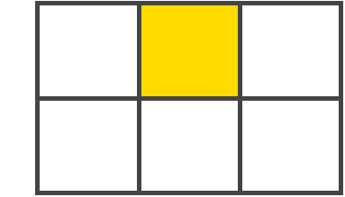
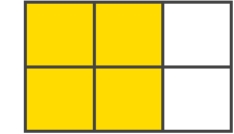
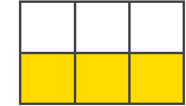
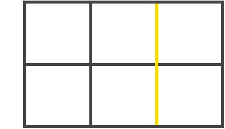
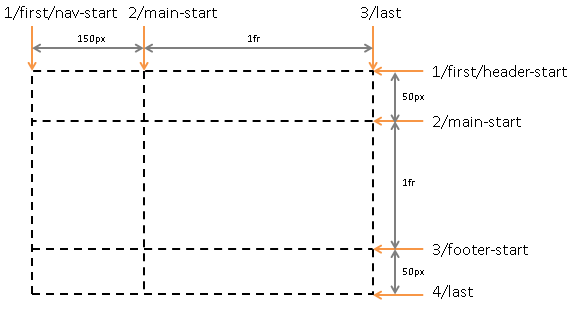

Как создать сайт » Верстка » CSS 3 » Руководство для начинающих по CSS Grid
Руководство для начинающих по CSS Grid
Дата публикации: 2018-08-08
От автора: дни таблиц, маркерные хаки, магия позиционирования и неортодоксальные способы обтекания использовались для достижения желаний макета, и они, наконец, позади. Теперь у нас есть выбор, чтобы использовать самый мощный метод макета, который когда-либо приходил в CSS на сегодняшний день; Grid.
Этот новый метод полностью изменяет подход к макетам для Web и, безусловно, самую важную спецификацию, когда-либо приземляющуюся в CSS. Большинство опытных разработчиков слишком хорошо знакомы с фрустрингами, которые им дали, поскольку CSS был впервые представлен, но новости ярче в наши дни, потому что поддержка огромна. Присоединяйтесь ко мне и читайте CSS Grid руководство.
Принципы работы Grid
Чтобы начать использовать Grid, важно понять основополагающие аспекты. Начнем с определения display:grid в родительском контейнере, который позволяет размещать дочерние элементы вдоль столбцов и строк.
Легкотня, да?
Как только ваша сетка будет определена, вы в хорошей позиции, чтобы начать, но это пока не делает ничего волшебного; мы должны сообщить сетке, как должны стоять большие столбцы и строки. Чтобы лучше ознакомиться с деталями, давайте обсудим терминологию Grid.
Практический курс по верстке адаптивного сайта с нуля!
Изучите курс и узнайте, как верстать современные сайты на HTML5 и CSS3
Терминология
Контейнер Grid: родительский контейнер, в котором вы определили отображение сетки
Элементы сетки: прямые дети из вашего сетчатого контейнера
Grid Gap: используется для разметки столбцов и строк. Подумайте о разрывах, как водосточные желоба.

Grid Cell: пространство между двумя соседними строками и двумя соседними столбцами сетки столбцов. Это единственная «единица» сетки.

Область сетки: одна или несколько ячеек сетки, которые составляют прямоугольную область на сетке. Сетки должны быть прямоугольными.

Grid Track: Треки определяются строками, которые запускают и останавливают строки или столбцы, поэтому у вас всегда будет больше, чем у столбцов / строк, которые у вас есть. Другими словами, это пространство между двумя соседними линиями сетки.

Grid Lines: Это разделительные линии, которые создаются при определении отображения сетки.
Неявные и явные линии сетки
Неявные: визуализируется как пунктирные линии в DevTools и создается браузером без явного определения строк / столбцов. Хорошим примером этого может быть перенос строк в новую строку независимо от определенного явного числа. Если у вас есть только две строки, явно определенные в вашем CSS, но ваш контейнер содержит больше элементов, чем вы ожидали, и они начинают перенос в другую строку … это неявно.
Явные: сплошные линии, видимые в DevTools для строк / столбцов, определенных в вашем CSS. Явные сценарии — это не решения, сделанные браузером; это решения, которые вы принимаете … это явное.
Интервал
Для пространственных рядов и колонок (или водосточные желоба) вы будете использовать свойство grid-gap, хотя это свойство должно в конечном итоге быть заменено на gap. Чтобы обеспечить вашу сетку водостоками (пробел), вы определяете это свойство в родительском контейнере.
.parent-container { grid-gap: 20px 20px; /* row gap / column gap */ } .parent-container { grid-gap: 20px; /* row and column gap */ }
|
1 2 3 4 5 6 |
grid-gap: 20px 20px; /* row gap / column gap */ |
Первое значение — это пробел в столбце, а второе значение — пробел в строке, но вы также можете передать значение 1 в виде сокращения для разрывов строк и столбцов, которые имеют одинаковое значение.
FR единицы
Значение FR, иначе известное как дробная единица, решает проблему автоматического распределения свободного пространства; это как бы заменяет потребность в процентах.
Создание контейнеров, столбцов и строк сетки
Видя, что ничего не происходит, пока вы не определите строки и столбцы, мы должны начать с того, чтобы узнать, как мы их создаем. Существуют различные способы определения обоих параметров, поэтому давайте начнем с изучения того, как создавать столбцы.
Создание столбцов
Свойство grid-template-columns создается в родительском контейнере, где каждое переданное значение представляет количество явных столбцов. Например:
.parent-container { grid-template-columns: 20px 1fr 40px; }
|
1 2 3 |
Пример выше говорит браузеру «Создайте 3 столбца, пожалуйста! Первый столбец шириной 20 1fr, второй столбец — 1fr , а третий столбец — 40px». Вы также можете передавать функции и ключевые слова в качестве значений, которые мы рассмотрим далее в этой статье.
Существует сокращенное свойство, также называемое grid, но мое предложение — держаться подальше от него, так как его трудно запомнить, сложно читать и время от времени расшифровывать.
Распространение колонок
Метод, известный как spanning, позволяет дочерним элементам растягиваться по столбцам, присутствующим в вашей сетке, определяя начальную / конечную позицию столбца.
.child-item:nth-child(1) { grid-column: span 2; /* span 2 columns */ } .child-item:nth-child(2) { grid-column 4; /* start item at column 4 */ }
|
1 2 3 4 5 6 |
grid-column: span 2; /* span 2 columns */ |
В приведенных выше примерах описываются промежутки столбцов и позиция начала столбца в фундаментальной форме, но вы также можете включить косую черту между двумя значениями.
.child-item:nth-child(1) { grid-column: span 2 / 5; }
|
1 2 3 |
В приведенном выше коде говорится, что браузер «Распределяет ширину столбца элемента сетки 2 и заканчивается в столбце 5.» Это означает позицию column-start column-end / column-end, но обратите внимание, что мы не сказали браузеру, где следует начинать столбцы; мы только говорили, где закончить.
Это то, что делает браузер. В нем говорится: «Хорошо … вы хотите закончить линию сетки для столбца 5, но также охватите 2 столбца, чтобы ваш объект действительно начинался в конце линии сетки для столбца 2.» Если мы хотим сообщить браузеру, где именно начать дочерний элемент, мы оставим ключевое слово span полностью.
.child-item { grid-column: 2 / 5; }
|
1 2 3 |
Это говорит браузеру «Начните мой пункт в столбце 2 и закончите в столбце 5.»
Создание строк
Сетки решетки похожи на столбцы, они работают только вертикально, а не горизонтально. Свойство написано идентично нашему столбцу, за исключением того, что вместо этого мы используем слово rows. Вот как это написано в вашем CSS:
.parent-container { grid-template-rows: 1fr 1fr 1fr 1fr; }
|
1 2 3 |
В приведенном выше примере определены 4 явных строки, каждая из которых 1fr высоту. Если какие-либо дети обернут новую строку, когда будут созданы ваши неявные строки.
Row Spanning
С grid-row мы имеем ту же возможность охватить строки, что и мы можем сделать для перекрытия столбцов. С днем рождения все!
.child-item { grid-row: span 2; } .parent-container { grid-row: 1 / 5; }
|
1 2 3 4 5 6 |
Подобно тому, как мы делали это для разметки столбцов, мы приближаемся к тому же самому диапазону.
Растягивание на полную ширину
Это значение sneaky -1, которое вы будете использовать часто, чтобы охватить полный контейнер сетки, и все потому, что ваша сетка больше, чем количество определенных столбцов / строк; это действительно связано с треками. Этот трек официально заканчивается в конце вашего контейнера сетки.
.child-item { grid-column: 1 / -1; }
|
1 2 3 |
Этот пример начинается с первого столбца и охватывает всю ширину определенной сетки независимо от количества столбцов, определенных в вашем CSS. Круто? Да!
Создание строк и столбцов. Короткий путь
Сокращение grid-template позволяет определить начальную и конечную позицию для строк и столбцов в одной строке и гораздо легче читать или использовать свойство grid ранее обсуждавшееся. Я лично предпочитаю это сокращение; это просто имеет смысл для меня.
.parent-container { grid-template: 1fr 1fr / 100px 100px 100px; }
|
1 2 3 |
Сокращение, которое мы предоставили выше — это grid-template-rows и grid-template-columns, но у нас также есть области grid-template-areas (подробнее об этом ниже). Первое значение — это начальная позиция, а второе значение — конечная позиция, за которой следует косая черта / которая повторяет этот шаблон. Вы можете думать об этом так: первая часть косой черты — это ваши строки, а вторая часть косой черты — ваши столбцы, но как насчет этих областей шаблонов?
grid-template: "header header header" auto "sidebar1 content sidebar2" 1fr "footer footer footer" auto / 200px 400px 200px;
|
1 2 3 |
grid-template: "header header header" auto |
Здесь мы определяем области шаблонов в той же строке, что и размер строки, разделенный косой чертой, которая определяет количество столбцов и их соответствующие размеры, и все делается в одной строке. Коротко и просто; замечательно!
Управление переполнением
Что делать, если у вас есть что надоедливое переполнение, задерживающееся в вашей сетке? Вы бросаете свой компьютер в окно? Неправильно! Вы можете контролировать переполнение сетки одним быстрым действием, используя некоторые тщательно размещенные свойства для переполнения столбцов и строк. Давайте начнем с изучения переполнения столбца.
Переполнение столбца
Есть переполнение? Вам повезло, потому что это одно из тех свойств, которое поможет справиться с вашими потребностями в переполнении. Он определен в родительском контейнере и написан следующим образом:
.parent-container { grid-auto-columns: 2fr; }
|
1 2 3 |
Насколько велико будет неявное переполнение, но вы должны явно указать CSS, какой тип переполнения должен быть, и в этом случае … столбцы.
.parent-container { grid-auto-columns: 2fr; /* overflow size */ grid-auto-flow: column; /* overflow type */ }
|
1 2 3 4 |
grid-auto-columns: 2fr; /* overflow size */ |
Результат вышеприведенного кода говорит о переполнении для создания столбцов размером 2fr означает, что неявное переполнение будет в виде столбцов; а не строк.
Переполнение строк
Это свойство работает точно так же, как и свойство переполнения столбца и написано так же; бонус!
.parent-container { grid-auto-rows: 1fr; }
|
1 2 3 |
Также, как свойство, которое мы использовали для столбцов, мы определяем размер наших неявных строк, передавая значение row в grid-auto-flow. Мы получаем строки, которые создаются в любое время, когда присутствует переполнение.
.parent-container { grid-auto-rows: 1fr; grid-auto-flow: row; }
|
1 2 3 4 |
Практический курс по верстке адаптивного сайта с нуля!
Изучите курс и узнайте, как верстать современные сайты на HTML5 и CSS3
С приведенными выше строками мы определяем тип переполнения (строки) и размер переполнения (1fr) неявного переполнения для дочерних элементов контейнера сетки.
Создание областей шаблонов
Области шаблонов приятно использовать, когда у вас нет идеи относительно количества столбцов, но также удобны для использования со средствами массовой информации для этой перестраивающей магии. Вот как вы пишете свойство:
.parent-container { grid-template-areas: "sidebar1 content sidebar2"; }
|
1 2 3 |
Используя набор кавычек, содержащих слова по вашему выбору, такие как “sidebar1 content sidebar2”, мы начинаем определять наши области сетки. Вы также можете определить несколько областей. Например:
.parent-container { grid-template-areas: “logo nav nav” “sidebar1 content sidebar2”; }
|
1 2 3 |
grid-template-areas: “logo nav nav” “sidebar1 content sidebar2”; |
Это свойство устраняет необходимость беспокоиться о номерах линий, и каждый из них будет установлен соответствующим образом. Вы устанавливаете позицию, определяя свойство на дочернем элементе по вашему выбору.
.child-item:nth-child(1) { grid-area: logo; } .child-item:nth-child(2) { grid-area: nav; } .child-item:nth-child(3) { grid-area: sidebar1; } .child-item:nth-child(4) { grid-area: content; } .child-item:nth-child(5) { grid-area: sidebar2; }
|
1 2 3 4 5 6 7 8 9 10 11 12 13 14 15 |
Используя область grid-area, мы передаем соответствующую область как значение. Ни больше ни меньше.
Именование строк сетки
Эта особенность Grid может быть полезна тем, кто хочет, чтобы явным образом определял поведение вашего макета. Вам предоставляется возможность указывать позиции в вашей сетке вместо использования безымянных числовых значений.

.parent-container { grid-template-columns: [nav-start] 150px [main-start] 1fr [last]; grid-template-rows: [header-start] 50px [main-start] 1fr [footer-start] 50px [last]; }
|
1 2 3 4 |
grid-template-columns: [nav-start] 150px [main-start] 1fr [last]; grid-template-rows: [header-start] 50px [main-start] 1fr [footer-start] 50px [last]; |
Области присваивается имя, за которым следует размер (ограничение). Чтобы определить позицию, мы перейдем к дочерним элементам, где мы определим значение, основанное на названных областях выше.
.child-item:nth-child(1) { grid-column: nav-start / last; } .child-item:nth-child(2) { grid-row: header-start / main-start; }
|
1 2 3 4 5 6 |
grid-column: nav-start / last; |
Функции
Эти полезные маленькие дьяволы — руки помощи для ваших желаний сетки. Они — суперзвезды, которые помогают сделать ваш код, пишущий жизнь проще, и намного эффективнее. Начнем с одного из моих repeat().
repeat()
Эта функция позволяет писать повторяющиеся рисунки лаконично, и вы будете использовать немного, когда дело доходит до Grid. Мы определяем, сколько строк или столбцов мы хотим, за которыми следует ограничение, но вы также можете передавать другие функции или ключевые слова в качестве аргументов.
.parent-container { grid-template-columns: repeat(4, 1fr); }
|
1 2 3 |
Ниже приведен пример действия repeat() для создания 4 столбцов шириной 1fr, но вы также можете создавать повторяющиеся шаблоны.
.parent-container { grid-template-columns: repeat(2, 50px 1fr) 150px; }
|
1 2 3 |
В этом примере шаблон повторяется дважды. Первый столбец имеет ширину 50px, а следующий столбец равен 1fr. Шаблон повторяется еще раз и заканчивается окончательным столбцом, установленным шириной 150px.
fit-content ()
Это свойство делает одно и что-то очень хорошо; он фиксирует значение до заданного размера.
|
1 |
В основном вы будете использовать его с grid-template-columns и grid-template-row. Например…
.parent-container { grid-template-columns: fit-content(200px) fit-content(400px); }
|
1 2 3 |
grid-template-columns: fit-content(200px) fit-content(400px); |
Это создает 2 столбца с максимальной шириной 400px и 400px соответственно. Вы можете также думать об этом как о другом способе определения max-width для столбцов и строк сетки.
minmax ()
Эта функция определяет диапазон между набором значений, который … вы догадались, что это … минимальное и максимальное ограничение, и писать ее проще некуда.
|
1 |
Когда контент разрывает границы столбцов, его можно использовать внутри repeat(). Например:
.parent-container { grid-template-columns: repeat(auto-fill, minmax(150px, 1fr)) }
|
1 2 3 |
grid-template-columns: repeat(auto-fill, minmax(150px, 1fr)) |
Если вы хотите, чтобы ваши дети обернулись, как шампуры, это путь, особенно когда добавляется больше элементов динамически.
Ключевые слова
Ключевые слова чрезвычайно ценны для вашего арсенала, поэтому вы хотите познакомиться с ними или, по крайней мере, знать, что они существуют. Давайте начнем с тех, которые вы, скорее всего, будете использовать, и, конечно, наиболее запутаны; auto-fit и auto-fill.
auto-fit / auto-fill
Ключевое слово auto-fill закончит сетку на явной линии сетки и заполнит все доступное пространство. Оно также растягивает элементы внутри дорожек Grid, чтобы соответствовать. Очень достойный подход для обертывания элементов в сочетании с minmax().
Ключевое слово auto-fit завершает сетку в явной строке столбца. Это противоположность тому, что делает auto-fill, так как оно также расширяет явную сетку.
Вы также можете использовать это ключевое слово в функции repeat(). Например…
|
1 |
Поскольку приведенное выше не указывает явно, сколько столбцов желательно, будут добавлены дополнительные неявные сетки или столбцы. Это эквивалентно тому, что браузер говорит «просто понять», и отбрасывает сетку на столько пробелов, сколько может, что заполняет доступное пространство.
dense
Является ключевым словом, указывающим, что алгоритм автоматического размещения использует «плотный» алгоритм упаковки, который пытается заполнить дыры ранее в сетке, если позже появятся более мелкие предметы. Это может привести к тому, что элементы появятся не по порядку, при этом заполнят отверстия, оставленные более крупными предметами.
Если он опущен, используется «разреженный» алгоритм, в котором алгоритм размещения всегда перемещается «вперед» в сетке при размещении предметов, а не отступать, чтобы заполнить отверстия. Это гарантирует, что все автоматически размещенные элементы выглядят «по порядку», даже если это оставляет дыры, которые могли быть заполнены более поздними предметами.
При использовании в этом способе grid-auto-flow: dense будет размещать предметы без оставшихся областей и покачиваться в дополнительных, которые подходят, или, другими словами, она упаковывает предметы, не покидая неиспользуемого пространства.
grid-auto-flow: column dense; grid-auto-flow: dense;
|
1 2 |
Если вы не заботитесь о заказе и просто хотите заполнить все пробелы, это хороший вариант.
Выравнивание
Flexbox хорошо известен тем, что упрощает выравнивание элементов, но вы также можете сделать это с помощью Grid. Те же свойства, доступные в Flexbox, также доступны с помощью Grid …
align-items align-self justify-self justify-items justify-content
|
1 2 3 4 5 |
Подумайте об justify как вдоль оси строк (слева направо) и align вдоль оси столбца (сверху вниз). Для более глубокой проверки погружений статья CSS-Tricks Grid, связанная в ресурсах в конце этой статьи. Это действительно отличный отрыв от того, как каждый работает.
Существует также мощное свойство, называемое place-items для выравнивания элементов, таких как выравнивание элементов по горизонтали или по вертикали в одной строке:
place-items: x | y; place-items: center center
|
1 2 |
Обычно эти свойства выравнивания определяются в родительском контейнере, но они также могут быть переопределены и для детей.
Порядок
Сетка имеет свойство order точно так же, как и Flexbox, для управления расположением элементов и написано таким же образом.
<div class="container"> <div class="sidebar"></div> <div class="content"></div> </div>
|
1 2 3 4 |
Затем в вашем CSS:
.container { display: grid; } .sidebar { order: 2; } .content { order: 1; }
|
1 2 3 4 5 6 7 8 9 |
Увидев, что исходный порядок элементов сетки не имеет никакого отношения, он делает переупорядочивание сверхлегким, особенно с медиа-запросами, но, как и Flexbox, может привести к сбою экрана при чтении. Это также создает проблемы при выборе текста с помощью курсора. Как Уолтер Уайт так красноречиво заявляет …
А что с Flexbox?
Мне жаль, что здесь нет ни того, ни другого. Оба отличные, поскольку Grid не предназначена для замены Flexbox. Что делает сетка очень хорошо, хотя она выкладывается. Возьмите gander в этом примере, используя сетку, чтобы создать липкий футер. Это также можно сделать с помощью Flexbox, но это просто интересно изучить возможности.
Здесь мы находимся в конце нашего путешествия по изучению бит, которые помогают создать эту удивительную функцию, известную как Grid. Я надеюсь, что то, что я разделял, вдохновляет вас начать использовать Grid и получить представление о том, что это не так страшно, как может показаться издалека. Сделайте себе одолжение и начните использовать Grid прямо сейчас в любой форме. Я обещаю, вам понравится.
Автор: Dennis Gaebel
Источник: //blog.logrocket.com/
Редакция: Команда webformyself.